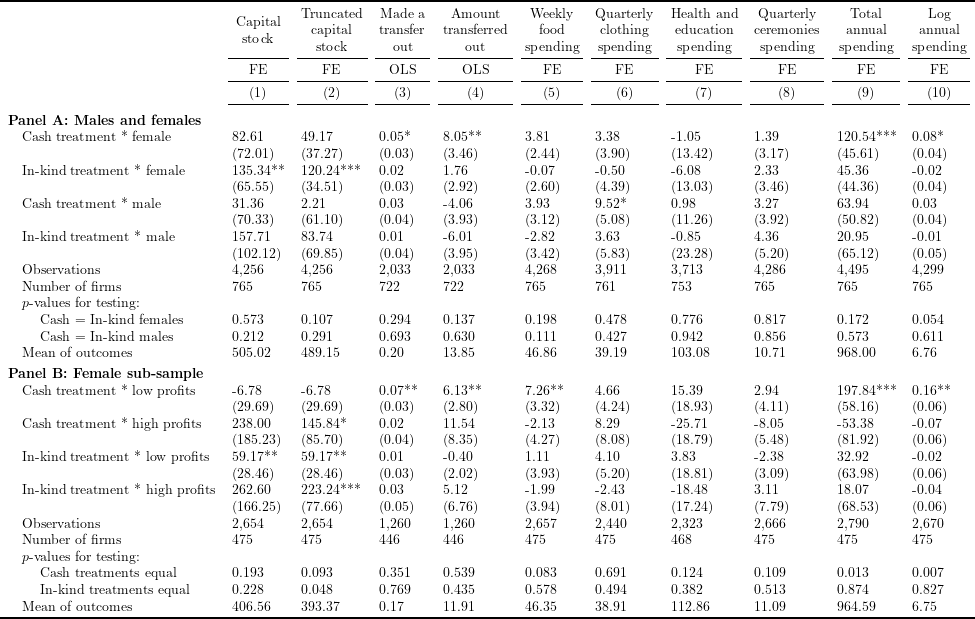

# Install and load packages ---------------
packages <- c(
"tidyverse",
"haven",
"lfe",
"stargazer",
"broom",
"kableExtra",
"XML",
"magrittr"
)
pacman::p_load(packages, character.only = TRUE, install = TRUE)
# Load an example dataset ---------------
data <- read_dta("data/ReplicationDataGhanaJDE.dta")lhs_var_list <- c(
"weeklyfood", "clothingshoes", "healthedn",
"expend_ceremonies_3months", "expend_total", "expend_logtotal"
)
df_table6 <- data %>%
filter(is.na(trimgroup)) %>%
group_by(groupnum) %>%
mutate(
amounttransferout = ifelse(is.na(madetransfersout), NA, amounttransferout),
expend_education_3months = ifelse(expend_education_3months > 3000, NA, expend_education_3months),
expend_total = ifelse(expend_total > 20000, NA, expend_total),
expend_logtotal = ifelse(expend_logtotal > 10, NA, expend_logtotal),
expend_fooddrink_outside_week = ifelse(
is.na(expend_fooddrink_outside_week) & !is.na(expend_fooddrink_home_week),
0, expend_fooddrink_outside_week
),
weeklyfood = expend_fooddrink_home_week + expend_fooddrink_outside_week,
clothingshoes = expend_clothing_3months + expend_footwear_3months,
expend_ceremonies_3months = ifelse(
is.na(expend_health_3months) & is.na(expend_education_3months) & is.na(weeklyfood),
NA,
ifelse(is.na(expend_ceremonies_3months), 0, expend_ceremonies_3months)
),
healthedn = expend_health_3months + expend_education_3months,
across(
.cols = c("atreatcash", "atreatequip", "wave2", "wave3", "wave4", "wave5", "wave6"),
.fns = function(x) x * mlowgroup,
.names = "{col}_mlowgroup"
),
across(
.cols = c("atreatcash", "atreatequip", "wave2", "wave3", "wave4", "wave5", "wave6"),
.fns = function(x) x * highgroup,
.names = "{col}_highgroup"
)
) %>%
ungroup() %>%
mutate(
across(
.cols = c(all_of(lhs_var_list), "totalK"),
.fns = function(x) ifelse(
x > quantile(x, .995, na.rm = TRUE, type = 2),
quantile(x, .995, na.rm = TRUE, type = 2),
x
),
.names = "{col}_trunc"
)
)lhs_var_list_trunc <- c(
"totalK", "totalK_trunc", "madetransfersout", "amounttransferout",
sapply(lhs_var_list, function(x) paste0(x, "_trunc"))
) %>%
set_names(NULL)
felm_table6 <- function(outcome, fe, rhs_var, control_var, iv, cluster, data) {
as.formula(
paste(
paste(outcome, paste(c(rhs_var, control_var), collapse = " + "), sep = " ~ "),
fe, iv, cluster, sep = " | "
)
) %>%
felm(
data = data
)
}
create_table6_sub <- function(panel) {
fe_1 <- "groupnum"
fe_2 <- "sheno"
fe_list <- c(rep(fe_2, 2), rep(fe_1, 2), rep(fe_2, 6))
iv <- "0"
cluster <- "sheno"
if (panel == "A") {
rhs_var <- c("atreatcashfemale", "atreatequipfemale", "atreatcashmale", "atreatequipmale")
control_var_1 <- colnames(df_table6)[grepl("^wave\\d(_female)?$", colnames(df_table6))]
control_var_2 <- colnames(df_table6)[grepl("^wave(5|6)(_female)?$", colnames(df_table6))]
control_var_3 <- colnames(df_table6)[grepl("^wave(3|4|5|6)?$", colnames(df_table6))]
control_var_list <- vector(mode = "list", length = 10)
for (i in seq(10)) {
if (i %in% c(1, 2)) {
control_var_list[[i]] <- control_var_1
} else if (i %in% c(3, 4)) {
control_var_list[[i]] <- control_var_2
} else {
control_var_list[[i]] <- control_var_3
}
}
} else if (panel == "B") {
df_table6 <- df_table6 %>% filter(female == 1)
rhs_var <- c(
"atreatcash_mlowgroup", "atreatcash_highgroup",
"atreatequip_mlowgroup", "atreatequip_highgroup"
)
control_var_1 <- colnames(df_table6)[grepl("^wave\\d(_mlowgroup)?$", colnames(df_table6))]
control_var_2 <- colnames(df_table6)[grepl("^wave(5|6)(_mlowgroup)?$", colnames(df_table6))]
control_var_list <- vector(mode = "list", length = 10)
for (i in seq(10)) {
if (i %in% c(1, 2)) {
control_var_list[[i]] <- control_var_1
} else if (i %in% c(3, 4)) {
control_var_list[[i]] <- control_var_2
} else {
control_var_list[[i]] <- control_var_1
}
}
}
test_fun_list <- replicate(2, vector(mode = "list", length = 10), FALSE)
if (panel == "A") {
for (i in seq(10)) {
test_fun_list[[1]][[i]] <- function(x) {
formatC(
waldtest(x, ~ atreatcashfemale - atreatequipfemale)["p.F"],
digits = 3, format = "f"
)
}
test_fun_list[[2]][[i]] <- function(x) {
formatC(
waldtest(x, ~ atreatcashmale - atreatequipmale)["p.F"],
digits = 3, format = "f"
)
}
}
} else if (panel == "B") {
for (i in seq(10)) {
test_fun_list[[1]][[i]] <- function(x) {
formatC(
waldtest(x, ~ atreatcash_mlowgroup - atreatcash_highgroup)["p.F"],
digits = 3, format = "f"
)
}
test_fun_list[[2]][[i]] <- function(x) {
formatC(
waldtest(x, ~ atreatequip_mlowgroup - atreatequip_highgroup)["p.F"],
digits = 3, format = "f"
)
}
}
}
reg_res_table6 <- tibble(
model = pmap(
list(a = lhs_var_list_trunc, b = fe_list, c = control_var_list),
function(a, b, c) felm_table6(a, b, rhs_var, c, iv, cluster, df_table6)
)
) %>%
mutate(
test_1 = map2_chr(model, test_fun_list[[1]], function(x, y) y(x)),
test_2 = map2_chr(model, test_fun_list[[2]], function(x, y) y(x)),
n_firm = map_int(model, function(x) n_distinct(model.frame(x)$sheno)),
mean_outcome = map2_chr(
model, lhs_var_list_trunc,
function(x, y) formatC(colMeans(model.frame(x)[y]), 2, format = "f")
)
)
if (panel == "A") {
covariate_label <- c(
"Cash treatment * female",
"In-kind treatment * female",
"Cash treatment * male",
"In-kind treatment * male"
)
test_1_label <- "Cash = In-kind females"
test_2_label <- "Cash = In-kind males"
} else if (panel == "B") {
covariate_label <- c(
"Cash treatment * low profits",
"Cash treatment * high profits",
"In-kind treatment * low profits",
"In-kind treatment * high profits"
)
test_1_label <- "Cash treatments equal"
test_2_label <- "In-kind treatments equal"
}
reg_res_table6 %>%
pull(model) %>%
stargazer(
dep.var.labels.include = FALSE,
keep = rhs_var,
covariate.labels = covariate_label,
title = "Table",
add.lines = list(
c("Number of firms", reg_res_table6$n_firm),
c("p-values for testing:", rep("", 10)),
c(test_1_label, reg_res_table6$test_1),
c(test_2_label, reg_res_table6$test_2),
c("Mean of outcomes", reg_res_table6$mean_outcome)
),
type = "html",
out = paste0("html/FMQW2014_table6_replicate_", panel, ".html"),
omit.stat = c("rsq", "adj.rsq", "ser"),
table.layout = "=#c-t-sa-n",
digits = 2
)
}
create_table6_sub("A")
create_table6_sub("B")table6_A <- readHTMLTable("html/FMQW2014_table6_replicate_A.html") %>%
.$Table %>%
drop_na() %>%
filter(!apply(., 1, function(x) all(x == ""))) %>%
slice(-1) %>%
as.matrix() %>%
set_colnames(NULL)
table6_A[(nrow(table6_A) - 2):(nrow(table6_A) - 1), 1] <- paste0(
"\\hspace{1em} ",
table6_A[(nrow(table6_A) - 2):(nrow(table6_A) - 1), 1]
)
table6_A[,1] <- str_replace(table6_A[,1], "p-values", "$p$-values")
table6_B <- readHTMLTable("html/FMQW2014_table6_replicate_B.html") %>%
.$Table %>%
drop_na() %>%
filter(!apply(., 1, function(x) all(x == ""))) %>%
slice(-1) %>%
as.matrix() %>%
set_colnames(NULL)
table6_B[(nrow(table6_B) - 2):(nrow(table6_B) - 1), 1] <- paste0(
"\\hspace{1em} ",
table6_B[(nrow(table6_B) - 2):(nrow(table6_B) - 1), 1]
)
table6_B[,1] <- str_replace(table6_B[,1], "p-values", "$p$-values")
rbind(table6_A, table6_B) %>%
kable("latex", booktabs = TRUE, escape = FALSE) %>%
kable_styling(latex_options = "scale_down") %>%
add_header_above(c("", sapply(seq(10), function(x) paste0("(", x, ")")))) %>%
add_header_above(c(" ", rep("FE", 2), rep("OLS", 2), rep("FE", 6))) %>%
add_header_above(c(
"",
"Capital\nstock",
"Truncated\ncapital\nstock",
"Made a\ntransfer\nout",
"Amount\ntransferred\nout",
"Weekly\nfood\nspending",
"Quarterly\nclothing\nspending",
"Health and\neducation\nspending",
"Quarterly\nceremonies\nspending",
"Total\nannual\nspending",
"Log\nannual\nspending"
)) %>%
pack_rows(index = c(
"Panel A: Males and females" = nrow(table6_A), "Panel B: Female sub-sample" = nrow(table6_B)
)) %>%
save_kable("tex/FMQW2014_table6_replicate.tex")